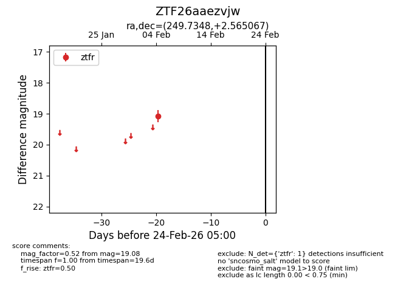
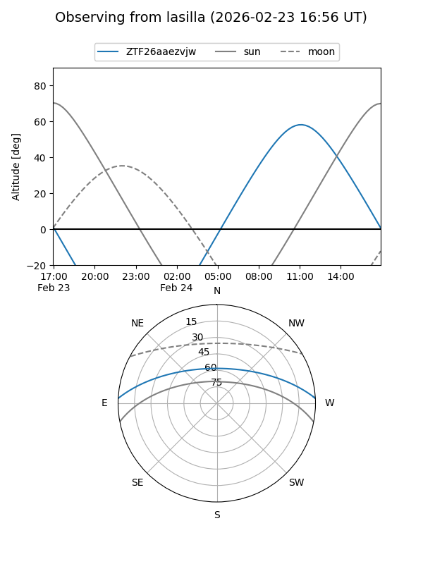
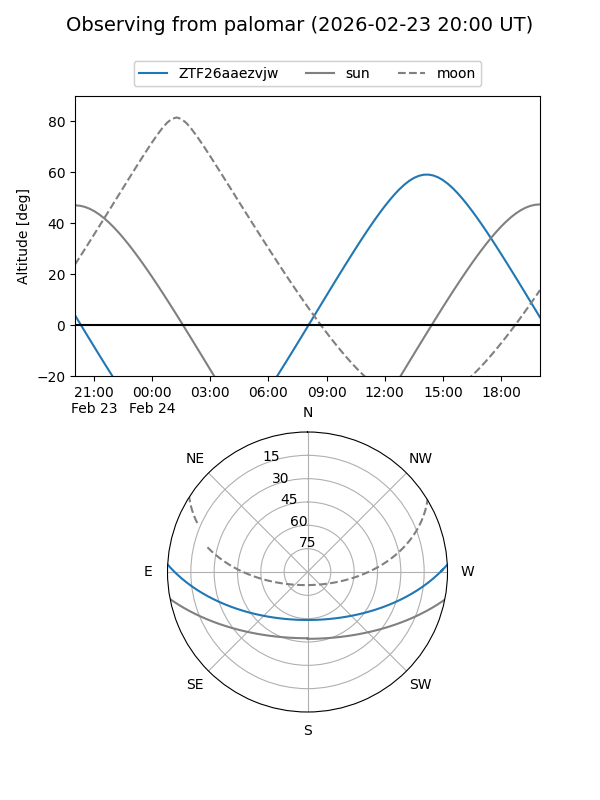

ZTF26aaezvjw
Target ZTF26aaezvjw at 2026-02-24 09:08
Aliases and brokers:
FINK: link
Lasair: link
ALeRCE: link
alt names
ZTF26aaezvjw (ztf,fink_ztf)
Coordinates:
equatorial (ra, dec) = 249.7348,+2.56507
equatorial (HMS+DMS) = 16:38:56.35,+02:33:54.24
galactic (l, b) = (18.8997,+30.41539)
Flags:
Photometry:
last ztfr=19.08
1 ztfr detections
Lightcurve

Visibility


Additional plots